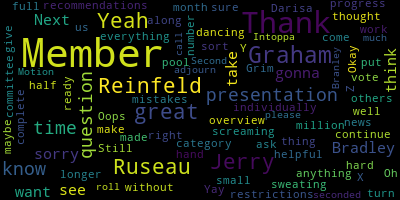
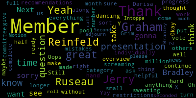

total time: 11.18 minutes
total words: 1791
{kind=link}
total time: 1.85 minutes
total words: 312
{kind=link}
total time: 1.49 minutes
total words: 204

total time: 1.85 minutes
total words: 291

[Graham]: or comments must include the following information, your first name and last name, your member street address, and your question or comment. Our agenda today is a committee of the whole meeting is being called to focus on the FY 25 budget areas of chapter 70 funding, grant funding, and the use of our evolving funds accounts. Member Ruseau, can you call the roll?
[rfgWV65I8WM_SPEAKER_03]: Certainly. Member Bramley?
[SPEAKER_05]: Present.
[rfgWV65I8WM_SPEAKER_03]: Member Graham.
[SPEAKER_05]: Here.
[rfgWV65I8WM_SPEAKER_03]: And for the first time I'm ever saying it, Member Intoppa.
[Graham]: I don't think we can hear you. You're muted.
[Intoppa]: Present.
[Graham]: There we are.
[Intoppa]: That's right. I don't know what's going on, but I'll just go for it. It's fine.
[rfgWV65I8WM_SPEAKER_03]: Member Olapade.
[McCue]: Present.
[Graham]: Member Reinfeld. Do not see her on just yet.
[rfgWV65I8WM_SPEAKER_03]: Okay. Um, second member. So present Mayor Lando.
[Graham]: I remember joining us right now.
[rfgWV65I8WM_SPEAKER_03]: Okay. Connecting. Thank you, man. And I remember I thought we were taking the roll call and then just need one more person. That's you to stay here.
[ZTAFqIlEOR4_SPEAKER_03]: Here.
[rfgWV65I8WM_SPEAKER_03]: And so, yes. Sorry, after you say that there are seven present.
[Graham]: Seven present, zero absent.
[rfgWV65I8WM_SPEAKER_03]: Member Ruseau? Yes, I just wanted to remind us that rule 19 of our member school committee rules said that we will take no votes in committees of the whole. We have a bad past practice of just rolling with it making all kinds of motions, and we literally have a rule we adopted saying we will take no votes in this meeting. I think that's important. If we want to make motions, et cetera, we can bring them to the regular meeting where votes actually matter. So just a friendly reminder of our rule. That's all, thank you.
[Graham]: Thank you, members. So Mayor Edward, sorry, Mayor Edouard-Vincent, oh my goodness. Dr. Edouard-Vincent, would you like to lead us off?
[Edouard-Vincent]: Oh, you're on mute. Thank you. The same situation happened to me. Good evening, everyone. I want to extend a very warm welcome to Mr. John and Tafa. Thank you for joining the team today. And we look forward to continuing our work together collaboratively. So welcome aboard. This evening, this is our first Budget Committee of the Whole. I want to just point out that this evening's presentation will be taking place by Mr. Gerry McCue, who is our Finance Director at Medford Public Schools. He has been working um incredibly hard in collaboration with the mayor and city hall and I thank our um vice chair Graham and member Ruseau who have been um working and just providing consult and so um I would like to pass the baton on to Mr. McHugh so he can begin his um budget update for the committee and um Mr. McHugh is going to um present. I should ask, Mr. McHugh, do you want to do all of your presentation first and then take questions at the end or pause in between the different pieces of presentations? Yeah.
[McCue]: I don't mind taking questions as we go along. I think tonight's meeting was going to be focused on revenue that's, you know, available for our budget. So it probably makes sense, you know, we'll be talking about Chapter 70, revolving funds, private grants, you know, the idea of charging programs for overhead. So it might make sense to take the questions as they go along. But, you know, whatever the preference of the committee is, is what I'll do.
[Edouard-Vincent]: Thank you. Is there anything else you would like me to share, Member Graham?
[Graham]: No. Why don't we let you get started, Jerry? And then if there are stopping points, why don't you just let us know where those good stopping points are in your presentation, and we can stop and ask questions.
[McCue]: With your permission, I thought I could give maybe a five-minute update on the FY24 shortfall. Um, just because we had some, um, made some progress in that area. Would that be okay?
[RhUNhYl62Oo_SPEAKER_05]: Yes.
[McCue]: Okay. Um, so I, um, a couple of meetings ago, I, I came up to the committee. We finally, you know, we're able to run some year end projections and were concerned about a $2.5 million shortfall that was showing up at that time. I felt it prudent to advise a committee at that time of that potential shortfall, but then we went to work to see what other kind of resources we could bring to bear. working with the city's finance director, Bob Dickerson, and of course the mayor. We were able to identify a grant for homeless transportation. We determined a potential balance from ESSA funds that we could use. We have some circuit breaker funds for special ed tuition that we could use. We created a charge back for food service to recover utility expenses. And we came up with about $1.7 million of potential resources that we could bring to bear. The finance director was generous with his time and reviewed the spreadsheet and actually identified a problem with one of the formulas in the projection. So the formula was like picking up most of the accounts that were showing a deficit, but was leaving out some accounts that were showing surplus. So once we made that fix, the deficit that we're looking at is about half a million dollars now. And The fiscal year 23 budget is still open and we've requested that the city apply a Teamsters, the third payment of a Teamsters union president that goes back to FY22. and it's worth $255,000, and that hit in FY24, but it's really properly charged to FY23. So if they make that adjustment, we get the projected deficit down to 250, and that is quite manageable with the resources that we've been able to identify. So I don't know if anyone has any questions. You know, there's some new members on the board since that time, so be happy to respond to any questions.
[Graham]: Mayor, did you want to take over? Did you want me to?
[Lungo-Koehn]: I can. I'm not sure if this question's without any sort of presentation on that 500 number, Darisa. Do you have anything in your presentation on that?
[McCue]: Um, I do not. I was just, you know, this just kind of all came together this afternoon, but, um, I mean, I have a, my spreadsheet that I use for projections is quite, um, lengthy. So, um, I, yeah, I think, I think the bottom line is that, um, we'll be able to manage through, we're going to finish the year with a balanced budget. Um, But if there's anything in particular that you would want, I mean, we're gonna be running this projection once or twice a month anyway, because things change. We have the teacher's contract, the administrator's contract, and the nurse's contract all have a 1% increase that's gonna hit at the end of the month. So that would be, after those go through, that would be a good time. to, you know, take another projection. We've anticipated, you know, we have some estimated numbers for the cost of that, but, you know, it'd be best to get the actual costs, you know, baked into the projections.
[RhUNhYl62Oo_SPEAKER_05]: Okay.
[McCue]: Thank you, Jerry. But thank you for your help, Mayor, in kind of working through this problem.
[Lungo-Koehn]: Yeah, thank you for your hard work as well. Member Bradley, then Member Bradley, then Member Graham.
[SPEAKER_05]: I just want to make sure I'm hearing this correctly. So the $2.5 million that we once heard is now down to approximately $250,000? Yes. Can we do a dance? Because I haven't slept in years.
[SPEAKER_05]: Yay! Yay! This is great news.
[Lungo-Koehn]: Why aren't we all screaming and dancing? I'm sweating. Yay! Still half a million, but yeah, we made great progress.
[McCue]: Yeah. Yeah, there was some encumbrances. We were over encumbered in one account, and that was a savings of $265,000. We adjusted some of our bi-weekly payroll amounts that we are using in the projections to be closer to current. And then the biggest difference was this error in the formula that was adding up the accounts that were in deficit.
[SPEAKER_05]: Anyway, it just- I've never been so happy about a mistake.
[McCue]: It kind of worked out, you know, I'm a little bit, I don't want to say embarrassed is too strong, but you know, I wish the problem, you know, didn't happen in the first place, but it could have went the other way too. So I'm grateful. It just worked out. But I think it's just, we have a, know we we any kind of little problem in this budget um is kind of magnified so uh but i'm totally i'm gonna sleep well tonight and uh we'll finish the year with a balanced budget okay thank you i know we i think we scheduled this from five to six so we're going to go to member graham the member reinfeld i see your hand up i'm going to go to your presentation okay um thank you jerry i wondered i don't i know that you generally um
[Graham]: Don't attend our school committee meetings on Mondays, but I was hoping maybe you could just write a report and submit that as an agenda item so that somebody can like read that for the record in our main meeting and I'm going to hold my any you know any. sort of additional questions and comments until then because this isn't on the agenda for today. But since I know that you generally aren't able to join those meetings, I did wanna say thank you for being proactive about telling us because we could easily find ourselves in the situation that Brockton is finding themselves in right now with massive surprises of deficits with everybody asleep at the wheel. So I don't think you should feel embarrassed Thank you for being diligent and for informing the committee, because I think that that is what we all want and need. So thank you. And then member Ruseau, I think Noah Urasko has joined us. So if you can add him to the roll call. Thank you.
[ZTAFqIlEOR4_SPEAKER_03]: That's it. Great. Member Reinfeld? I was just going to thank Jerry again for being proactive and say, don't be embarrassed. We'd rather get the information sooner. Yes.
[Lungo-Koehn]: We all make mistakes all the time. Thank you. Yeah. Great news. We'll turn it over to you, Jerry. Thank you.
[McCue]: Okay. All right. So, you know, one of the key sources of revenue or, you know, resources that we have for I don't know if they, let me see, can you, are you, let's see, can you see my screen?
[Edouard-Vincent]: Not yet, yes.
[McCue]: Okay, all right. So, historically, you know, the Chapter 70 isn't a big source of revenue for Medford, like it might be in other communities that have a high, low income population. But nevertheless, it does outline, you know, kind of the minimum spending that a school district should be spending. And it identifies that and, you know, allocates a share that the city's expected to contribute. And then the state contributes, another amount. So I thought it might be useful just to look at kind of the last few years of Chapter 70. If you go back to FY23, our foundation enrollment, which includes not only MedFed public school students, but MedFed students attending charter schools as well. So charter schools is part of the Chapter 70 formula. And the city gets a bill every year for charter school tuition for those students. The state calculated a foundation budget of $64.9 million in 23. They determined the city should contribute 51 million, and then 13.9 would come from Chapter 70. And this net school spending is something that we have to report at the end of the year to show that we met our net school spending target. Now in MedFed, you're fortunate that the city picks up the health insurance for active employees and retirees that are attributable to MedFed public schools, and they pay for the charter school tuition. Every year we are gonna hit this med school spending target because the city routinely contributes more than they're required to. In 24, it was pretty good year for MedFed because the foundation enrollment went up by over a hundred students. And again, that could include charter school as well. Our foundation budget went up 6.9 million. And then that was basically that 6.9 million increase was split between the city and Chapter 70. So there was a three and a half million dollar increase in Chapter 70 that year. Then we forward to FY 25. And this is based on the uh, governor's budget that is working its way through the house. And this can change a little bit. It doesn't change too drastically, but it could change a little bit after, uh, it goes through the legislature, but. Between FY 24 and FY 25, our enrollment actually went down and our foundation budget went up by 1.7. The city's required contribution went up by almost 2.8 million. But because our enrollment went down, because the Chapter 70 money has a hold harmless provision, so instead of going down, which it should have, down to about 16 million, it stayed the same. And then we qualify for what's called minimum aid It's a per student amount. I think it's $35 per student. And so our Chapter 70 increased by $135,000. And the net school spending increased by the total of the district contribution in the $135,000. So that went up 2.9. I also did an analysis of our school budget versus our net school spending, just to kind of get a sense of what typically happens in MedFed. So our school budget, you know, has always increased during the year. We had a big increase in FY22, you know, a smaller increase in FY21. And our net school spending in relation to the school budget typically is going up, but in a couple of years, our budget was actually less than the net school spending budget. But just kind of data points on Chapter 70. I could spend a little bit of time on how Chapter 70 works for some of the new members, but I don't want to take up too much time. So happy to answer, this might be a good time just to answer any questions on chapter 70.
[Lungo-Koehn]: All right, member Graham.
[Graham]: Thank you. I will reconnect about scheduling some time with Tracy Novick to do a real deep dive on chapter 70 for all of us. Now that we have a new member on board, we'll get his availability and figure out a time to do that. But Jerry, a couple of things that I've been watching in the news is that two points of concern about chapter 70 is one, the rate of inflation that was assigned in the governor's budget, which was like one and a half percent, I wanna say, and people feeling like that's considerably lower than what actual inflation represents. But the other thing that people are talking about is a pretty substantial reduction in students being considered low income. There's actually like a list of communities where the drop was significant. And I didn't see us on that list, but I was just curious if you have any insights about how our low income enrollment numbers are changing. I mean, I know they're sort of attributing it to the, mass health redetermination, among other things. But I was just curious what our low income numbers look like, and if we feel like those sound representative of our population, or if we are, if there is a gap there, much like our SNAP gap.
[McCue]: Yeah, let me. just gonna call up another spreadsheet, but what, yeah, the, you know, years ago, all districts used a paper process to identify loan, you know, it was tied to the lunch fund. Since we have gone to, you know, community eligibility, Everybody qualifies for free lunch. That led the state to try to come up with a different methodology. And it's based on identifying people that are on various benefit programs within the state. And it just doesn't pick up everybody for some reason, particularly recently arrived immigrants, even if you're a legal immigrant here, you're barred from receiving benefits for five years. So they've been trying to work around that, but I will try to do some more research on that. But essentially, this is how, can everybody see this screen, FY 25, Chapter 70 Foundation Budget?
[Graham]: We can't see your screen right now.
[McCue]: You cannot?
[Graham]: No. OK. Here it comes.
[McCue]: Good. OK. So this part of the foundation budget is kind of what's the base budget based on all of our students. And then every community gets of incremental increase over and above the base for the foundation. Now it's not an increase in chapter 78, it's an increase in your budget. So because you have special needs students, English language learners, low income students, it's assumed that you need to spend more money because these students are more needy. But if you look over here on column 19, This is the count of low-income students that we have in Medford Public Schools. So if we have 4,200 students, that's about 40%, 45%. There's another, so we're in a group eight category. You see this little blue box over here, 43% of our students are low income. That qualifies us for group eight. And that dictates how much of a bump up we're gonna get for low income. So the very neediest communities get a much bigger increase for their low income students. But this is where we are. uh group eight so our foundation budget increases by 12 and a half million dollars due to our low-income students and you know this is where we we should be spending money on interventionists and tutoring and we qualify for title one in some of our schools because of this so
[Graham]: Thank you.
[Lungo-Koehn]: Thank you, Member Ruseau.
[McCue]: I can go back and figure out, I can do some trending on that too to see what the trend is.
[Lungo-Koehn]: Member Ruseau?
[rfgWV65I8WM_SPEAKER_03]: Thank you. Chair, when you were showing the budget for the last few years, everybody who was here certainly remembers the level funded year of FY21. And I realized that we did have a supplemental, the state hadn't even finished their budget, so we level funded, and I believe there was a supplemental, and your numbers reflected an increase, which we never approved a supplemental as a school committee. And I'm just, because I am often looking at the data from DESE, and I cannot find the number that you showed anywhere online. I believe you have access to you know, the login and all that, to versions of portals that the public doesn't, is that where you get the number that you are showing, not on this one, but the last five years of budget?
[McCue]: This one.
[rfgWV65I8WM_SPEAKER_03]: Yes, yes. That FY21 number, we actually approved in our budget 61-250. That's what we approved.
[RhUNhYl62Oo_SPEAKER_05]: Okay.
[rfgWV65I8WM_SPEAKER_03]: But I don't doubt that your number is right because I heard that there was a supplemental. That's as much as I ever heard about it.
[McCue]: Yeah, I'd have to go back and I might've just gotten them off of budgets that I found in the office here.
[rfgWV65I8WM_SPEAKER_03]: I did look at my own copies of budgets and never saw that number. Can you, one second, I want to write it down. I know you're ridiculously busy, but I really would like to know where that number came from, because these are really, really important. Yeah, 521. Because, you know, this trending stuff is a constant conversation that I certainly have with others, and having the same numbers matters. Thank you. Okay. Yep.
[Lungo-Koehn]: You can continue Jerry, thank you.
[McCue]: Okay, so the next thing that's looking at, maybe we'll look at revolving funds. So, let's see. So the city, I mean, the school department has a number of evolving funds that they use, which provide some resources to the school department budget to run programs. This MEET program is a tuition-based program and it, You know, I'd have to go back in the years. I'm going to try to spend my time over the next three weeks kind of looking forward. But when we have some time, we can go back to see why some of these balances were accumulated. But certainly, this is an area where we could charge staff that are assigned to the MEVE program and not use those not have, you know, save those salaries from being charged to the general fund budget. The vocational school has a number of revolving funds that they use because they provide services to students, I mean, to parents and other individuals in MedFed, and this gives them a chance to have kind of a real world experience in their education. So there's a cosmetology program, marketing, there's culinary, the bistro, here at the high school, there's a copy program, automotive program, and a graphics group, and then there's this category tuition. Um, in, uh, in years past, uh, MedFed, uh, was a program that was accessed by a lot of students outside of MedFed and they would pay tuition to MedFed. It would go into this account, um, because there's, um, in the program is popular with our own students. Now there's, there's little room to accept, um, students from outside. So there's a few students that are tuitioned in that are still going through the program, but this program as a source of revenue will eventually just dry up. But this provides an opportunity for us to charge some teacher salaries if we want. This account typically contributed about $150,000 to supply needs for the vocational school in addition to what was provided in the general fund. And because this account is not producing more revenue, I think we're gonna try to bring more of that supply expense into the general fund. So we eventually don't kind of have a fiscal cliff with the supply budget of the vocational program. Then we have a separate account for the rental charges for the Edgley field. So any personnel that's assigned to that field when it's in use gets charged to this account. And of course, the lighting expenses and maintenance of the field, that all gets charged to this account. Now, I'm told that there was an intentional strategy to build up the fund in this account so it would be available when the field had to be replaced. So there is a good balance. If that field was replaced, it certainly wouldn't cover the cost of the entire field, but it might cover costs of design and project management. And then we have the school lunch fund, which provides lunches to our students. And that fund is self-sustaining. So most of the money comes in federal reimbursement. A small amount comes from state reimbursement. that balance is in good shape. School athletics as well, we charge fees to our students to participate in sports. It certainly does not cover the entire cost of sports. There's a budget in the general fund that covers most of the expenses, but this provides some opportunity to charge some of the expenses that we have in athletics to this fund. Community schools is another area where we are renting our facilities like the Japanese language school, churches that use the facilities. Right now, it's a little concerning that we're running a deficit right now in this account, but I want to say that with these accounts, the revenues tend to lag. The expenses, the expenses more or less happen in real time. And the revenues eventually, you know, have to get up to city treasury and get deposited into the correct account. But we have to keep an eye on that. There's also a driver's ed program where we charge students to have their driver's ed program to get their license. It pays for a couple of staff members. And that's most of the charges to this account. And there is a good balance in that account as well. We also charge students and staff if they lose or damage their Chromebooks. Those all go into a fund. and are available to refurbish computers or to buy replacements. Summer School is another account where there's a fees charge for, I guess, credit recovery programs. This is another account that's in deficit, so it could be that Obviously, it could be that we haven't fully deposited the proceeds there, but we are showing a deficit in that program. This vocational early ed program is a small early childhood program that's run out of the book for students that are pursuing teaching or similar types of career paths within teaching. So there's charges made and a little bit of expense made, but there's balance in that account as well. Preschool, this.
[North]: I believe it might be MFN, Jerry.
[McCue]: MFN?
[North]: Medford Family Network.
[McCue]: OK, thank you. There are a few accounts here from Mentored Family Network. Now, Mentored Family Network is kind of a completely separate program from Mentored Public Schools, but we operate more or less as a fiscal agent for them. And so we accept their grants, we provide some accounting and payroll. HR, all those support services are provided by Medford Public Schools. And then the pool has its own rental fees and membership charges. The pool, we need to really take a look at how that's staffed and the hours that are open. really kind of back of the envelope assessment when I first got here. And I just think we're only, we lose about $20 an hour every time we're open. We're open a lot of hours, early in the morning, late at night. We do have some good revenue from different schools. A lot of schools don't have pools, so some schools are coming to MedFed to use our facility for their swim program. But that really needs a kind of a management review to make sure that that can run in the black every year. This short tuition account is another account similar to vocational tuition where In years past, we used to tuition in students to the Curtis Tufts program, and we haven't done that in recent years. But we did accumulate a balance, and we use that balance on and off to support the special ed program here at Medford. Kids Corner is another program that should be self-sustaining. It's the daycare program that's available to staff. It's located here in the high school. The evening school is no longer in use. I think this small deficit is from a prior year, and I think it's probably just missed It's a mis-posting to this account. So we'll have to do a journal entry to clean that up. But we no longer run an evening program. And then the before and after school program is a good moneymaker for the school department. So it just has accumulated a large balance over the years. running in the red this year, but that's, again, I think the revenues are lagging and the expenses are more in real time. So that will finish up in a positive amount. But those are all the revolving funds that we operate in MedFed, and I'd be happy to answer any questions people might have on that.
[Lungo-Koehn]: This is great, Jerry. Thank you. Member Reinfeld, then Member Ruseau, then Member Graham.
[ZTAFqIlEOR4_SPEAKER_03]: Thank you, Jerry. So I am curious when the lags will catch up. So when we'll know whether these numbers are lasting or temporary. And then I guess my other question is what ability do we have to see what the trends are? Because I'm seeing a lot of net losses and I'm curious how many of those are perpetuating from year to year and how many are anomalies.
[McCue]: Yeah. I can get that. There are a couple of accounts that are like the pool. And what happens usually is, and I don't really have a good handle here because I wasn't here last year, but there's, you know, if you had, for instance, a deficit in this vocational carpentry, which is really this happened prior to FY 24, but the vocational school has been kind of running all the carpentry revenue expenses recently through the vocational tuition account. And we just kind of reactivated this fund. The students build sheds for different organizations So they're able to sell low shed. So that's gonna kind of correct itself. But if we finish the year with that, and we had bandwidth in our general fund to absorb that, we would do a journal entry to get that account corrected. But that's probably typically what happened in years past. There were accounting maneuvers at the end to kind of get everything into balance because The city's director of finance is going to send me a report and says, I have to get these accounts in balance to close my book. So there's an effort made in August and September to get those straightened out. But what we're going to do is we're going to try to take a look at, The individual departments keep track of their deposits to the city treasury. So we're gonna go back and look at those figures to make sure that everything we deposited with the treasury is hitting the right account. So that would be the first step. And then we'll go from there. But we can go back a few years and identify the, if there's any problem areas. Yeah, we don't wanna be in a situation where we're like routinely bailing out these different revolving funds. And if they're consistently running a deficit, we have to look at the revenue structure and like with the pool, with the community schools, we are looking at the rates that we're gonna charge Athletics is another account, you know, are those rates, you know, kind of keeping up with the increases in our expenses. So that's what we'll be looking at.
[ZTAFqIlEOR4_SPEAKER_03]: For this cycle or for what's the timing on looking at that?
[McCue]: Well, as soon as we get the budget we're going to have a general fund. And when that's finished, then we're you know, our attention is going to be turned towards, you know, year end activities and we were going to Uh. And we want to kind of spend make sure we're spending a general fund and make sure these revolving funds are in balance. So.
[rfgWV65I8WM_SPEAKER_03]: Thank you, Jerry. This is excellent work. And I really appreciate having it in front of us so we can really see this. I believe the Japanese school pays even more than the revenues listed for community schools. So if their annual contribution, their annual payment is more than that number, I think somebody should figure out where that money went. But you did indicate that. there was work to be done there. But I think that their annual payment is greatly in excess of the revenue shown. So I'm a little concerned about that.
[McCue]: Well, all that money at the time it was collected went into community schools account. And I think what they do is they prepay for a number of years. So that is something that, also has to be watched. So you don't want to, you know, they're overpaying in the first year. You don't want to use that surplus for other things because you're committed to providing them the space, you know, for the next three years. So. Okay. Point well taken.
[rfgWV65I8WM_SPEAKER_03]: No, thank you. I didn't know they did it. That's really useful information. The pool revenue, I'm glad to see that other schools that are using our facilities are paying as well. I guess the question, and obviously our students shouldn't be paying to use the pool to do the things like, you know, swimming and all that stuff. But I guess, you know, My question is, are we just charging entirely ridiculously low rates to the public who wants to come in and use our pool? Because frankly, it's like the best kept secret in Medford is that our pool is fabulous. You can get in at a ridiculously early hour. It's not crowded, although I have not done it myself. But we need to really have a conversation about what we're charging to the public. to folks in the public who are using the pool, and it sounds like you'll get that done. Can you repeat, I'm the chair of the board of SHORE, so can you repeat what you said about the SHORE tuition, because I was confused?
[McCue]: Okay. So back, even when I was working in Chelsea, I can remember paying tuition to MedFed because we had two or three students in the Curtis Tufts special needs program. So those tuition payments went into this revolving fund. And so over time, surplus funds were built up. So because the revenue that we collected was in connection with our special needs program, any spending we would do would be connected to our special needs program. So you can collect the money and you can kind of spend it on special needs as you see fit. I think last year we might've charged a portion of a teacher, but anyway.
[rfgWV65I8WM_SPEAKER_03]: Thank you.
[McCue]: Yeah.
[rfgWV65I8WM_SPEAKER_03]: That's great. Thank you. I appreciate that. And then the kid's corner, I mean, I think we have people who work in Medford because we have Kids' Corner, and it's great, right? But clearly we are not charging, which I realize it's charging staff, but we are not charging enough money to cover that, and we need to just bite the bullet. I don't know, I don't believe the school committee ever votes on what the costs for Kids' Corner are. which should be interesting whether we're supposed to or not, but I certainly for one hope that whatever it costs, no matter how big the increase, it just needs to be zeroed out. If the increase is to double what we charge people, then that's the increase because we can't be having other programs pay for a service that is frankly a service that people all over would die to have. So.
[McCue]: Yeah, well, they did, this top line is the beginning balance. So that means it was the ending balance in FY22. So they did finish the year in a surplus. So I'm confident that they will finish this year in a surplus. I just think that the revenues are lagging again, but.
[rfgWV65I8WM_SPEAKER_03]: Oh, okay.
[McCue]: It's still a concern until we kind of close the books and we verify that you know, it is in surplus, so.
[rfgWV65I8WM_SPEAKER_03]: Okay, that's great. That makes me feel better because, you know, nobody wants to be telling folks, by the way, your daycare is going to now cost a lot more money because that would be terrible. But if this is lagging, that makes me much happier. Those are all my questions. Thank you.
[Lungo-Koehn]: Thank you. Next up is Member Graham.
[Graham]: Thank you. I think across the board, we have unequivocally been told in the past that it is absolutely the school committee's authority to set rates for all of these things. And we have never been presented with a rate card despite asking about it at least annually since I have been on the committee. And so before we go too far into the next fiscal year, I would like to see a rate card for our review and approval for all the tuition-bearing parts of this revolving fund, and that would include recommendations about Kids' Corner, the pool, any sort of preschool programming, NEAP to the extent that community members are paying for it, driver's ed, athletics, like all of those things. I think we have approved athletics once or twice and really to waive tuition during our waive user fees during COVID. But I would like to see a cohesive rate card that also includes our rentals. our rental rates so that we as a committee can take a vote and be supportive of what we need to generate from a revenue perspective into these accounts. And I think, you know, Jerry, obviously you can't do what you weren't even here to do, but we've asked this question multiple times and we have been assured that it's coming, but I think we really do need a fiscal view of these tuitions to say, what do we recommend that they are for FY25? Like we've already done that with before and after school. So I feel comfortable with that, but, they're not an exception in any way in terms of how they operate to anything else. So I'm hoping that that can be on the agenda in the coming month or so, because some of these programs, people will need to start to plan accordingly.
[McCue]: Yep, yep, that makes complete sense.
[Lungo-Koehn]: And then I think the other thing... Member Grim, I was just gonna ask, do you want small presentations on each category so we could vote on them individually as they're as they come ready or do you want a full overview and when it when everything's complete just because maybe that would take longer than if yeah the pool could give us recommendations you know, next month along with X, Y, and Z where others take some time.
[Graham]: I don't have a preference. Like if there's an ease, whatever is easiest for the administration to go through and sort of cover all the bases. I think whatever we do to set rates for next year, this year is going to be probably really imperfect. And next year we can be a little bit more comprehensive about it. and say like, is what we did last year, did it work, did it not work, et cetera. And then I think we can get on a schedule where we could do rate setting as a single thing. But if it takes a while for us to get there, I think that's okay. So I don't have a strong preference. I think it's really more question of like, how can the administration be ready for that? I had two other questions. One is, I would like to see a reconciliation of athletic fees to ensure that we are collecting all of our athletic user fees. So I would like to know how many students are registered. What that means in terms of the anticipated fees, the number of students who are exempted from fees, whether they have like multiple siblings in sports or they play many sports or we are providing financial assistance, I would just like to see an actual accounting of like kids doing sports and money collected, and I would like to see whether that number ties out or whether we have a problem collecting our fees. I am concerned that we do. I've heard from lots of people in the community that It's really hard to actually pay the school to have their kid participate, but their kids get to participate anyway, which is great. And I would absolutely love for us to be a fee-free school. But in the meantime, if we're going to charge fees, I want to make sure we're doing it with accuracy and fairly. And I've not ever been able to see any reporting that sort of gives me that assurances. I think that would be another thing I'm interested in. And then I think the other thing that strikes me, and it's honestly been sort of on my mind since long before I was on the school committee, is when we talk about like, and these are small examples, but like lost Chromebooks and lost library books, what is the process for replacing those? Because anytime I spent a lot of time in the school libraries and what I heard was like, Oh, well I keep this money in my petty cash because once it goes into the lost book fee, I can never get it. And what I see when I see a line that says there's $30,000 in lost Chromebooks, that's $30,000 in like Chromebooks not available to students. And same thing with library books, right? Like there's a 20 something thousand dollar balance, which in the library, the used library, the lost library book fund, that means there's $28,000 worth of books not available to our students. And I think the point of the fund is to replace the lost books and it just doesn't seem like that happens. So I would also like to delve into like, what are the processes to use those funds and who is responsible for making sure that's happening on a regular basis and in those two particular instances?
[McCue]: So my plan, I just about finalized a scope of work to have an auditing firm come in and do a management review of our collection practices. So part of it was like organizing all these accounts where we collect revenue because there's just a number of different ways we collect revenue and some departments are responsible for making deposits to the city treasurer's office. It's a little bit kind of spread out from an accountability point of view. So just to get an idea, we have different websites where we make collections, other parents are able to pay in cash sometimes, and I don't have any, I'm not concerned that there's like fraud going on, but I think that we need somebody come in, take a look at how we do it, give us recommendations on how we can tighten up the revenue collection. And then we're thinking about, you know, kind of in, you know, what is our, we need some capacity to, to manage the revenue better than we have now. So trying to, you know, envision, like making that somebody's position without necessarily adding adding another position, but maybe that's a recommendation from this report. But I agree with you. There's a lot of cooks in the kitchen on revenue collection.
[Graham]: Yeah, I completely agree. Well, maybe three years ago now, we asked for that exact audit to be done, and we retained Andy Paquette to do it. And he did provide a public report to us and it did not go into that level of detail, which was disappointing at the time and also sort of the middle of COVID and lots was going on. I don't know if privately there were recommendations made about revenue collection, but as I sat here looking at this, I certainly said some sort of centralization of revenue operations and controls has to happen. All that cash management control strikes me as a risk, and it's great to hear you say you're not overly concerned about any sort of actual fraud happening right now, but it's incumbent on us to prevent that. And I think we need to have good measures to do it. But also we need to be able to tell people what they owe us and make it easy for people to, to, to pay. So, you know, like I see stuff all the time and sort of, you know, like field trips, people say like send cash or, you know, please send cash. And like, that's, that's part of like revenue collection That's a symptom of complicated revenue collection, in my opinion. So I think we do need to do that, but there may be some findings from that initial report that you can get your hands on as well.
[McCue]: Yeah, there's a whole accounting system around student activities, which is where those funds would go, your last example. So that's not even on this chart, but that would be part of the management review.
[Graham]: Yeah, OK, great. And then I think the other question I had is whether we're confident that community schools is being charged appropriately for the staff expenses.
[McCue]: Yeah, we're not confident in that. I think that, and part of it was because, you know, some of our, costs, you know, are not keeping up with the contracts that are being settled. So it's really, I'm glad to hear, like, we get into a process of annual review of the rates, because I think that's going to create a system where we're looking at the sufficiency of the rates we're charging on an annual basis. But we're probably, we are not, recovering the costs of staff that are assigned on the weekends to some of these events.
[Graham]: Yeah, and that just can't continue to happen. We can't continue to pay in excess of what our rentals are providing us. It's just not feasible, and it hurts our students. And we can't continue to do that.
[McCue]: Agreed, yeah.
[Graham]: Thank you so much, Jerry. This is super helpful.
[McCue]: We can, I'm looking at the time, we can stop here. I had, you know, we do get private grants and donations as well, but, and I have a little presentation on kind of my thoughts around chargebacks to some of these programs to recover admin costs and facilities costs, but we can defer that to another time if you want.
[Lungo-Koehn]: I know, I did see member, member Reinfeld, you put your hand down. I thought you had a question. It's up to the committee. I don't know who has time restrictions and I'm.
[Graham]: I'm okay to stay.
[Lungo-Koehn]: Okay, I'm gonna just.
[McCue]: I think maybe 10 more minutes. Sounds good. Okay. So we have these private grants that provide uh, you know, extra programming that doesn't affect the general fund. Um, so the, uh, the center of, um, citizenship and social responsibility, um, has three, three accounts that they manage this crystal Campbell betterment project, the Cummings foundation, which is really a lot of how they, uh, provide for their, uh, programming. And then they also get donations here in column H. So they have programs running in every school, which is providing our students after school opportunity. This Leah Clark English Award, to be honest, I'm not sure what this is for, I have to try to go back but it looks like it might be a scholarship type of a program. This Verizon grant is another private donation that we got, small balances. Some of these grants probably haven't been charged yet or there might be small balances that will, transfer out at the end of the year if they're no longer active. There's another group, Save Our Sports. So there's a small balance, there's a gift. So these are little balances that will be transferred out. The Campbell Gift Fund is also another CCSR. Bloomberg gift account that looks like maybe it was something from the past with the balance on it. Then we have Medford Family Network has the children's, they get a grant from the Children's Trust, which I need to get a handle on because I wanna say that there's probably, they have a few accounts. I wanna say that this account's probably being overcharged in another account, like maybe this gift account is being undercharged, but we'll get to the bottom of that. And then there's this miscellaneous school gifts account. I'm not sure what's going in and out of this account, but typically a lot of schools have this type of account. Some people, sometimes alumni or successful families in Medford might just be generous and give give a gift for no specific reason that it would go into this account. And then there's something gonna notify the art department. There's a money for a mural that seems to be available, Medford Family Network. And then we got a grant for STEM equipment and professional development. I think we got it in FY23 and we spent the money in FY23. So there was a deficit in the account, but then we we received the funds in FY24 and that all balanced out. But it's just another group of funds that are outside. I know you know about Title I and ESSER and those types of grants, but there's these other smaller grants that the school department manages. I don't know if there's any questions on that.
[Lungo-Koehn]: No, this is helpful. Thank you.
[Lungo-Koehn]: Oh, sorry. Sorry, I didn't see you. Member Ruseau.
[rfgWV65I8WM_SPEAKER_03]: I just have one question about, and I don't expect you to have the answer on this, but some of those things have substantial balances, and I'm hoping that somebody has the documentation on those bigger things, like there's three Cummings ones, because when I see these big numbers sitting there, I worry about, the grant expiring and then we have to send the money back because we didn't figure out how to spend it, frankly, or did we spend it and we didn't properly account for the expenses. So, you know, obviously if you don't have the grant documents, you know, but that's something I hope we could do because there was some big numbers there.
[McCue]: Yeah. The Crystal Campbell Betterment Project, which, you know, has the biggest balance. My understanding is that most of that may be an endowment. So, I just have to kind of work something out with the treasurer where we, whatever. So, an endowment is that we're gonna keep the original contribution in perpetuity and then would probably spend any interest that's being generated from that account. But I think that's why you see the balance there, but we have to set up the accounting so we make sure that we don't spend the amount that's intended to be the endowment. Thank you. Okay. So just gonna spend just a couple minutes and get your thoughts on this.
[rfgWV65I8WM_SPEAKER_03]: Mayor, I believe member Intoppa had a question.
[Lungo-Koehn]: Oops, member Intoppa.
[Intoppa]: No, I was just gonna, to member, thank you, to member Rousseau's point of the Cummings Foundation, that large grant funds the CCSR over an expanded amount of time, so that might be why, and I don't know if they have to give it back, but I do know they have to apply, I think, every 10 years or so, it's like somewhere between six to 10. But I was curious about the gift fund and if that had any in time in with the alumni association and where those funds are handled, where the overflow of SGA funds from the previous classes, I know some of them, sometimes they're retained, sometimes the SGA funds go into like the alumni association so that way they can do their own private scholarship. So I'm curious to see how much of that may be attributing to that, if at all. Or if it's purely outside, if it's purely outside donations of people who wanna give back to our schools.
[McCue]: I had a little, is that a question? I had a little trouble hearing that.
[Intoppa]: I know, my apologies. figure out my mic, but I would be interested to see where the MHS gift fund, what is funding that, if it's anything with the alumni association, if it's in terms of like overflow of SGA funds, the student government funds with fundraised funds. And then the beginning point, again, I don't know how much was heard, fixing my mic situation for next meeting about the Cummings Foundation being a grant that's spent over a few years. And I think we're actually, in year one or year two of it. I think it was just replenished, which might be why that number is so large, but that is the predominant funding source for all of the units of CCSR and all the projects.
[McCue]: I do know they get an award for a number of years. So they get $35,000 a year from that award. So I think it might've been, maybe it was a 10 year award of 350,000. I'm not sure. I think the committee is going to get a presentation on that program soon. But if you could send me an email on your question and I'll do the research for you. gmccube at medfitk12. Okay. Okay, is this so no, it's Sorry So this was kind of my thinking around this chargeback plan that we need a little more work to go, but essentially, you know, we have programs like the afterschool program and Kids Corner and MEEP that use our facilities, use our administrative services. And, you know, we should be, we can, charge those programs for the facilities expenses and the admin expenses for the services we're providing them. So the trick is kind of coming up with a methodology that's like fairly allocates expenses to those programs. So for the facilities charge, I thought the easiest way to do it would be to base it on classroom use. And then we might be able to kind of piggyback on this to figure out, you know, if we're charging these outside groups a sufficient amount for our facilities. But these are the number of classrooms we have according to the MSBA in each of our schools, 651 total. And then facilities budget for this year is 6.1 million. And if I divide the number of classrooms by the facilities budget, it's $9,400 per classroom. Then I said, well, we go at least 183 school days, including teacher days, and then maybe another 40 of July and August for a 223-day year. And we can kind of nail that number down. but that would be $42 a day. Then I divided, I assumed a 12 hour day and divided it into kind of three time categories, because for instance, the afterschool program mostly uses it after school. And then I assumed 40, you know, 10 classrooms per school. I don't know whether that's low or high, we'll confirm that number. But 170 school days and 10 early release days where the after school program provides more of a half day program, that works out to be a charge of $100,000 that we could recover for facilities. And then similarly for admin, right now we have, 1,031 active employees. We have a finance, HR, and technology budget of almost $1.1 million. So the finance, HR, and technology costs work out to be about $1,000 per employee. And then I'm assuming before and after school program has 60 employees. and that will be a cost recovery of 63,000. So it will look like something like this and this will be able to kind of offset some of the budgeted amounts in the general fund. More to come to that when we do the budget presentation, That's what we look at. And then the other thing is that I don't have for you tonight, but we do get E-rate funding for our technology projects, any project that qualifies for E-rate. So that will be part of a additional revenue presentation. But it's probably around $100,000 or $130,000 in offset for some of our technology costs. And that's my presentation for tonight.
[rfgWV65I8WM_SPEAKER_03]: Did we lose the mayor?
[Graham]: Nope, she's still here. But member Ruseau, did you wanna ask a question?
[rfgWV65I8WM_SPEAKER_03]: I did, yes. Not to throw a wrench, and it's based on what I'm seeing. It's more like throwing a little tiny file into this networks. But when we talk about the after-school program, for instance, we just became aware that a primary space they use at one of the schools was just reserved for another program without their They were just told, by the way, you don't have your space anymore. So when I think about making them pay for spaces, I think we have to also think about how their space literally, because we still can't figure out how to do reservations of space in the district, that their space may, in fact, just randomly no longer be theirs. So when we talk about charging them, I almost feel like we should pay them back. for the crisis that we put them in when we give away their space. And I realize that's sort of an additional little piece of work, what to do in those situations. But I just think it's super unfair and minor thing to think about after the fact, but.
[McCue]: Yeah, no, I agree. And it just, it happens in every school district, but you have to, the services that are being provided by the afterschool program are just as important as whatever else is happening in the school. And the best way to do it is just before school, come to an agreement with the principal, what spaces are gonna be available on a regular basis for the afterschool program. And then things come up and people work together and they kind of work things out for something unforeseen, but you have to have a regularly available space to do proper planning. And then there's other spaces within the school that can be used for some of these other meetings or kind of figure out a way, you know, how best to share the space, but it's not an untypical problem in districts.
[Lungo-Koehn]: Great, thank you so much, Jerry. If there's no, any other further questions?
[Graham]: Motion to adjourn.
[Lungo-Koehn]: Motion to adjourn by Member Graham, seconded by... Second. I think that was Member Branley or Member Reinfeld. Reinfeld, roll call, please.
[rfgWV65I8WM_SPEAKER_03]: Thank you. I'm talking to myself saying I'm muted aren't I as if anybody's going to answer. Yes. Yes. Yes. Yes. Yes. Yes. Yes. Yes. Yes.
[Intoppa]: Yes.
|
total time: 11.18 minutes total words: 1791 |
total time: 1.85 minutes total words: 312 |
total time: 1.49 minutes total words: 204 |
total time: 1.85 minutes total words: 291  |
{kind=link}